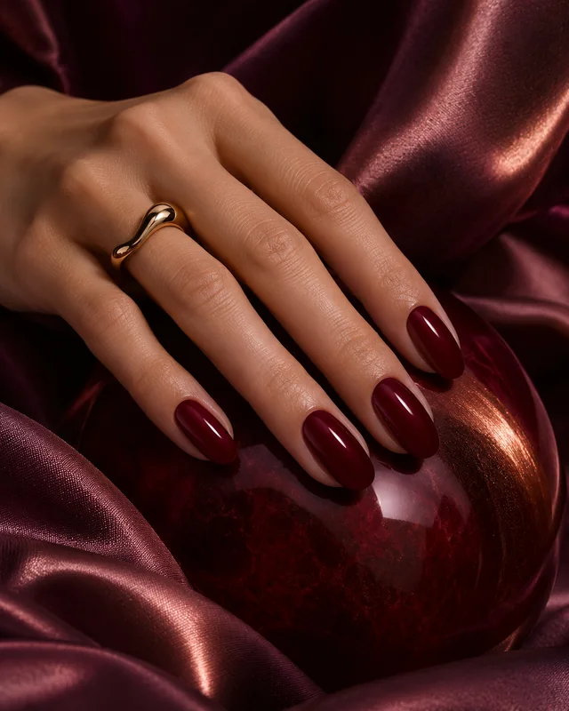

Сайты и боты для бизнеса
Пять сайтов для разных сфер бизнеса и три симулятора VK и Telegram. Откройте сайт или пройдите диалог с ботом, чтобы увидеть проект в действии.
Сайты
 Цветочный бутик
Цветочный бутикMaison Bloom — цветочный бутик
Санкт-Петербург
Каталог, тематические подборки, конструктор букета, подписка и флористика в коралловых и винных тонах.

Салон красотыLuxe Atelier — салон красоты
Москва
Маникюр, эстетические услуги и запись в студию с тёплым камерным интерьером.
Wonder Steps — детский центр
Казань
Яркий дружелюбный сайт для кружков и занятий с маршрутами для родителей.
 SPA и отдых
SPA и отдыхAkvaterra Retreat — SPA и wellness
Сочи
Природная премиальность, каталоги решений, пакеты отдыха и акцент на атмосферу.
 Окна и ремонт
Окна и ремонтSkyFrame — окна под ключ
Екатеринбург
Воздушный лендинг с выгодами, сериями окон, калькулятором и чистым современным визуалом.
Боты
 VK · Симулятор
VK · СимуляторVK-бот детского центра
Программы по возрасту, просмотр расписания и пробное занятие со сводкой.
 Telegram · Симулятор
Telegram · СимуляторTelegram-консьерж SPA / отеля
Подбор отдыха, отдельная запись на процедуру и выбор трансфера.
 Telegram · Симулятор
Telegram · СимуляторTelegram-бот цветочного магазина
Букеты по поводу и бюджету, открытка, доставка и цветочная подписка.